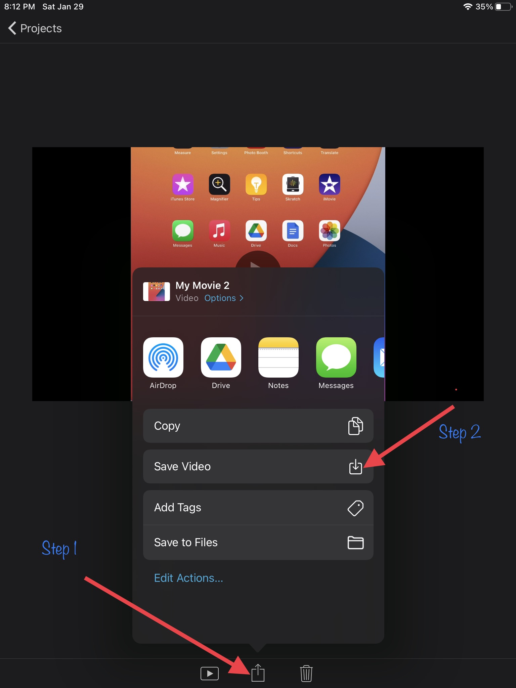
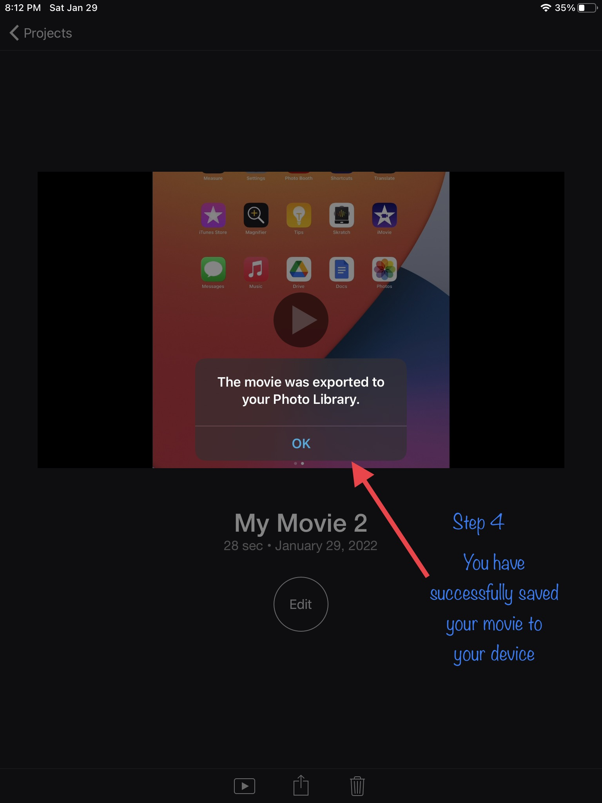

Do It! iMovie: All About Us
 The Challenge
The Challenge
Your challenge is to use iMovie to create two short videos, one about you and one about your partner. Once your videos are complete, plan a movie viewing party with the class.
Getting Started
To begin creating a new project, refer back to How Do You Use iMovie? section.
Project Steps
-
Pre-Production/Storyboarding
-
Production
- Post-Production
-
Event Planning
Pre-Production/Storyboarding
During pre-production, you will plan your movie and explore iMovie. One way to plan out your thoughts is to create a storyboard.
To create your storyboard:
- Pick the order you will introduce and record in.
- Pick the angle you think would work best.
- Draw pictures to show where you will stand and any props you might use.
- Decide the order of your questions and add the text to the bottom of each picture.
Explore iMovie with your partner.
- Try moving the iPad closer, farther away, tilting it, and using different lighting.
- Try changing the camera angle. How does it change the video? What camera angles do you want to use for each clip?
- Is there a lot of background noise? If there is, consider moving to a different location.
Post-Production
During post-production, you will put together your clips. You will also edit the clips to make your movie ready to be viewed.
-
Look through your video clips and delete any that you won't use.
-
Add your video clips to the timeline.
-
Edit your video clips by:
- Splitting clips if they're too long or you want to cut something out
- Adding a filter to change the look of the video
- Adding a title. Titles can be used for: Introductions, Credits, Explanations
4. Save and export your video. Share it with others!
Click to see the steps to save and export your video.
Step 1 & 2: Click export icon and Save Video.

Step 3: Wait for export.
Step 4: Click Ok to confirm export.

Event Planning
Your movie is saved, and now you are ready to plan a movie viewing party with the class. Before your teacher can schedule which day the party can be, she needs to know how much time is needed to show all of the videos created.
Will you wait until everyone in your class has completed the iMovie project, or will you just share the videos from this project cycle?
Remember that every video should be two minutes long. How long will it take to view all the iMovie videos that were created?
Challenge: How much time is needed to transition between videos? Will you make time to share comments and ask questions? Consider how much extra time will be needed for each video. Add that to your total from above.